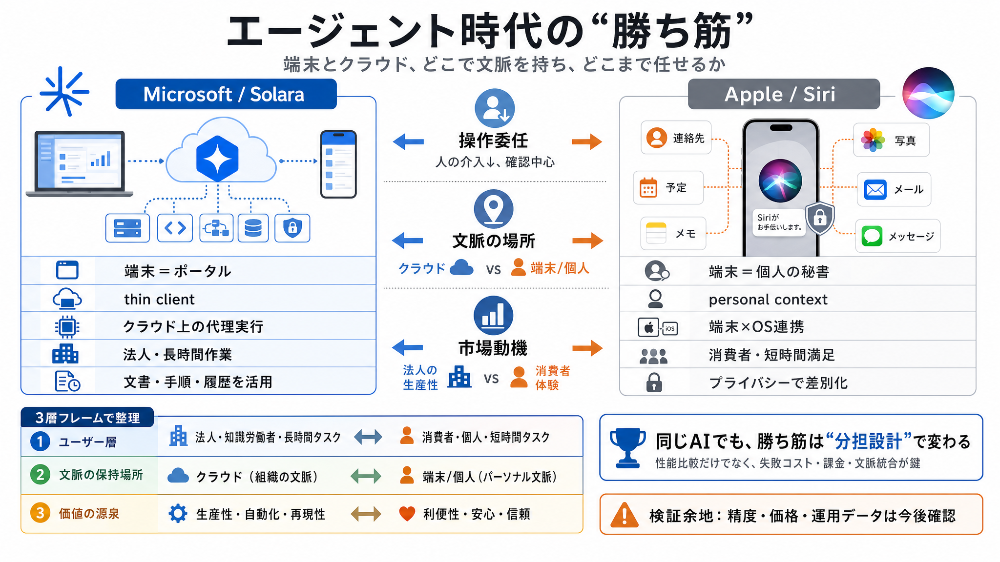

A new vision for agent-first computing: Project Solara | Steven Bathiche at Microsoft Build 2026
[25:09 Microsoft Build event in 25 minutes The Verge 269K views • 7 days ago Live Playlist ()Mix (50+)](https://www.yout…

ユーザー操作を減らし、プロセスを裏で進める
介入の必要性 ↓（ユーザーは確認中心）入口UI（要求）と結果確認を担う
thin client（端末は軽く）に適合クラウド上のエージェントと連携する入口
portal / ポータル（起点）個人の文脈に強く結びついた端末中心の活用
personal context / 個人文脈長い作業は“端末の外”で進む前提
操作の見えなさが価値操作を減らす＝端末の負担を下げる
thin client（計算はサーバ側）数秒の依頼から結果まで導く体験
代理実行（見えない工程）会社の情報が前提になる
操作の判断材料が揃う生産性向上に支払いが発生
長稼働に耐えやすい業務成果として評価される
失敗コストを管理しやすい長時間の代行より、短時間の満足
完全自動化＝必須ではない広告・注意獲得がスケールしやすい
常時“仕事代行”の購入動機が相対的に弱い個人情報へのアクセス
個人文脈を推定・活用Spotlight / App Intents
意味索引＋アクション誤作動・評判リスクを抑制
価値提供の“置き場所”Solara：法人寄せ
長時間稼働に耐えるSiri：消費者中心
短時間の満足が主Solara：thin client適合
端末は入口Siri：個人文脈・端末中心
プライバシーで差別化“最先端そのもの”より、失敗コスト込みの価値
誤作動の影響を制御横断データ統合（連携の前提が必要）
対応範囲が価値に直結実現の握りどころは大規模プラットフォーム
端末×OSの統合が強い人がどれだけ介入するか
介入↓＝裏で進む情報は端末かクラウドか
personal contextを誰が持つ法人の生産性 vs 消費者の体験
支払い動機の違い端末/クラウド分担と市場の整合が追える
thin client と personal context を接続定量（精度・価格・運用）の不足
実効性は今後の確認が必要エージェント時代の勝ち筋（Apple vs Microsoft）を論じる元記事名。thin client と personal context の対比が核。
クラウド上のエージェントと連携する“ポータル”としてのデバイス群、法人最適化の文脈。
個人の文脈（personal context）と端末内連携、プライバシーを軸にした差別化。
意味索引（検索）からアクション連携へつなぐ要素として言及。
agent（代理実行） / thin client（端末軽量・クラウド処理） / personal context（個人文脈） / vaporware（実現可能性が曖昧）
[25:09 Microsoft Build event in 25 minutes The Verge 269K views • 7 days ago Live Playlist ()Mix (50+)](https://www.yout…
# Microsoft Build 2026: Agents, Solara, Scout, and MAI Models as the Next Growth Layer. : ai agents azure ai foundry…
[](https://www.youtube.com/watch?v=hF8swzNR1-o). [](https://www.youtube.com/watch?v=hF8swzNR1-o). [](https://www.youtube…
Microsoft Source Signal blog Official Microsoft Blog Microsoft On The Issues Asia Canada Europe, Middle East and A…
Get a more detailed walkthrough of Siri AI's new capabilities from #WWDC26, and while an update will be available today,…